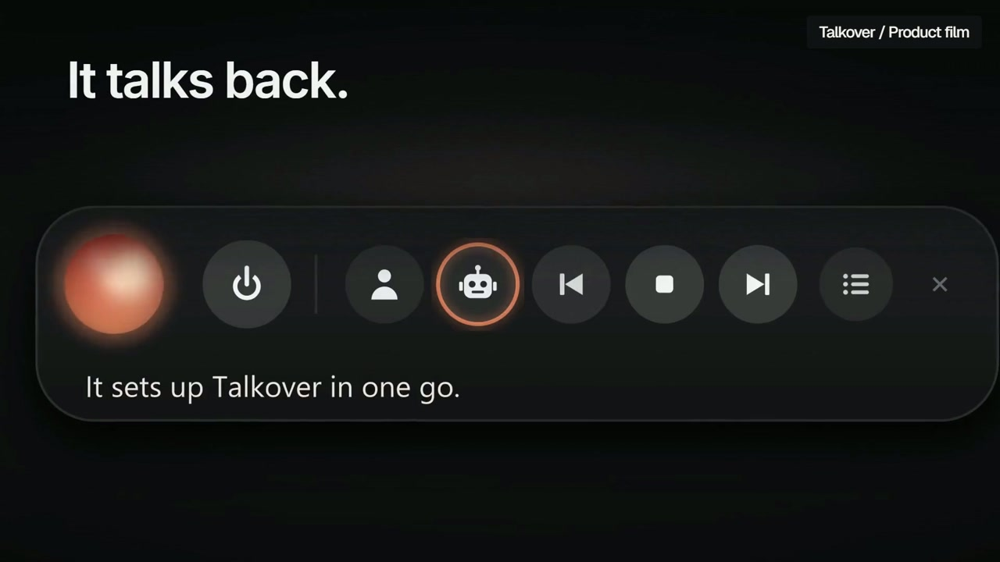
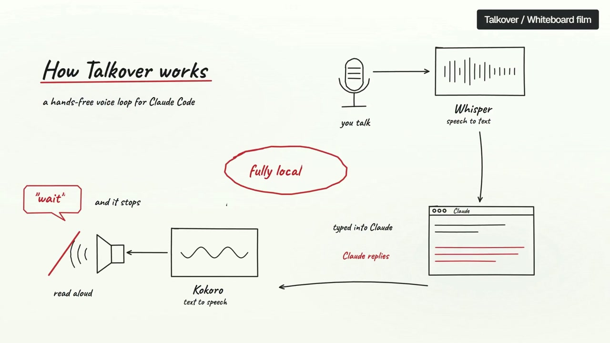

Capture
Real interfaces and command output.
video-studio
A local pipeline for product capture, composition, music, rendering, and artifact verification. It is the toolchain behind the films in this portfolio.
Real interfaces and command output.
Camera, typography, pacing, and local music.
Frame strips and technical checks on the rendered file.

